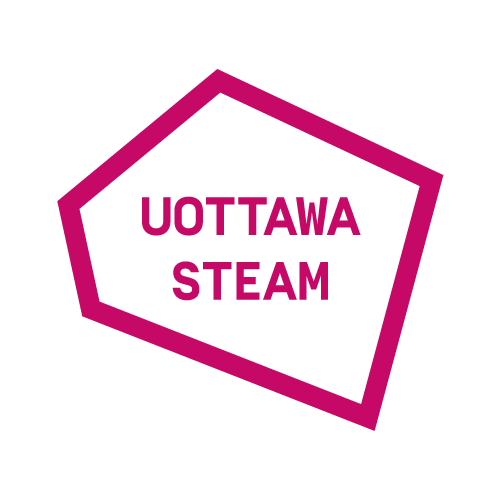

We Are University of Ottawa (UOttawa) STEAM.
/ Nous sommes UOttawa STEAM.

Fall 2016 - Spring 2017
Chemistry x Art x Tacos @ UOttawa!
(En Anglais / English)
UOttawa STEAM Team
Held on May 19th, Chemistry x Art x Tacos was uOttawa STEAM’s first event. For our inaugural activity, we wanted to organize a fun group outing to give a first taste of STEAM. We selected this idea from a list of about 50 ideas generated from our chapter’s members. We decided at our first meeting that the annual “Light up the sky with chemistry” event was the perfect idea for our launch. The event was an educational chemistry magic show for a range of audiences could appreciate and enjoy. To make it more of a social event, we organized a group dinner at a restaurant prior to attending the light show.
One member of the planning team scouted restaurants close to the event, and we ended up choosing a Mexican restaurant. We used “Doodle” to decide the best time to meet. Because the University of Ottawa is a bilingual university, our Facebook event was advertised in both English and French. On the day of, we met at our reserved table, got to know one another, and talked about why we were interested in STEAM. After dinner, we had the chance to see other parts of Ottawa by taking a pleasant walk along the Rideau Canal on our way to the event. Once we arrived, we had the chance to visit different activity booths with various chemistry presentations and scientific explanations. And all the activities, such as making slime, making and eating liquid nitrogen ice cream, smelling a collection of chemical odours, and learning about the chemical composition of wine and chocolate, were free! There was a wide range of fascinating presentations that inspired curiosity and delighted the senses with an emphasis on having fun. Once the sun had set, the show began. We watched smoke and flames dance, and fire and sparks light up the sky. The audience would wow in unison as we watched chemical reactions. They learned about their everyday uses and explanations for why the reactions happen. This was accompanied by the presenters’ crowd pleasing humour. They also got to learn about how chemistry was used to create certain special effects. The sights and sounds of the show made it an enriching entertainment experience for all ages.
Chemistry and art makes such an interesting fusion! They demonstrated fireworks one after the other to conclude the show. We saw colourful explosions and learned how they happened, such as which colours were associated with which chemicals that were used to make the fireworks. At the end of the night, everyone went home having seen a dazzling show and learning about the chemistry behind the “magic.” This was the first taste of what STEAM can bring to the community.
Chemistry x Art x Tacos @ UOttawa!
(En Francais)
UOttawa STEAM

Chemistry x Art x Tacos a été le premier événement de la part de l’association uOttawa STEAM qui a eu lieu le 19 mai. Pour notre première activité nous avons souhaité organiser une sortie conviviale en groupe et qui donnerait un premier aperçu de ce que peut représenter les STEAM. Pour choisir cette activité nous nous sommes servi d’une liste d’environ 50 idées proposées par les recrus de l’association. Nous avons ensuite délibéré lors de notre première réunion que l’événement annuel « Light up the sky with chemistry » constituait une parfaite idée pour notre première. Celle-ci se présente sous forme d’un spectacle éducationnelle sur la chimie sous des allures fantastiques de magie qui plairaient tant aux enfants qu’aux adultes. Pour rendre l’événement plus social il a été conclu de se rejoindre avant entre participants dans un restaurant. Une personne a été chargée de trouver un restaurant à proximité de l’événement. Nous avons choisi un restaurant servant de la nourriture mexicaine.
Pour décider de la meilleur heure pour le rendez vous nous avons voté avec le logicielle Doodle. Puisque l’université d’Ottawa est bilingue, le post événement de facebook a été traduit en anglais et en français. Le grand jour arrivé nous nous sommes retrouvés à une table réservée préalablement. Nous avons pu faire connaissance et parler de l’intérêt que chacun a à propos de l’initiative que représente STEAM. Une fois le repas terminé nous avons pris un sentier animé qui longeait le canal Rideau. Ce fut aussi l’occasion pour les participants de connaitre de nouveaux endroits d’Ottawa. Une fois arrivé sur le lieu du spectacle nous avons pu découvrir de nombreux stands d’activités proposant des productions de la chimie et accompagné d’explication scientifique. Il faut savoir que toutes les activités proposées étaient gratuites ! Quelques exemples de celles-ci sont la création de slime, de glace à partir de nitrogène liquide (et que l’on pouvait manger toute suite après !) ou encore une grande collection d’odeurs et des exposés sur la nature chimique du vins et du chocolat.
Un éventail de présentations intéressantes aussi bien les unes que les autres qui en plus d’attiser la curiosité fait plaisir aux sens tout en étant ludique. La nuit tombée le show pouvait commencer. Une fois les présentations faites la dance des fumigènes, des feux et des lumières a pris place dans le ciel. Le public ébahi a pu assister à de très nombreuses réactions chimiques tout en apprenant leurs utilités dans la vie quotidienne, le processus des réactions et cela accompagné par un ton humoristique de la part des présentateurs. Nous avons aussi eu l’occasion d’apprendre comment la chimie était utilisée pour certains effets spéciaux. Le spectacle était aussi agréable tant visuel que sonore et enrichissant pour un public de tous âges. De la chimie et de l’art, une fusion des plus intéressantes! Un des éléments qui m’a le plus intéressé a été la présentation des feux d’artifices. Ce fut aussi ce qui conclût le spectacle. Des feux de toutes les couleurs étaient présentés sous fond d’explications scientifiques. Nous avons pu apprendre entre autre à quels couleurs étaient associés chaque élément chimique utilisés pour faire ces feux. La nuit finie chacun a pu rentrer chez soi satisfait d’un spectacle éblouissant et en ayant apprit beaucoup de choses. Voici une forme de ce que STEAM peut apporter à notre société.